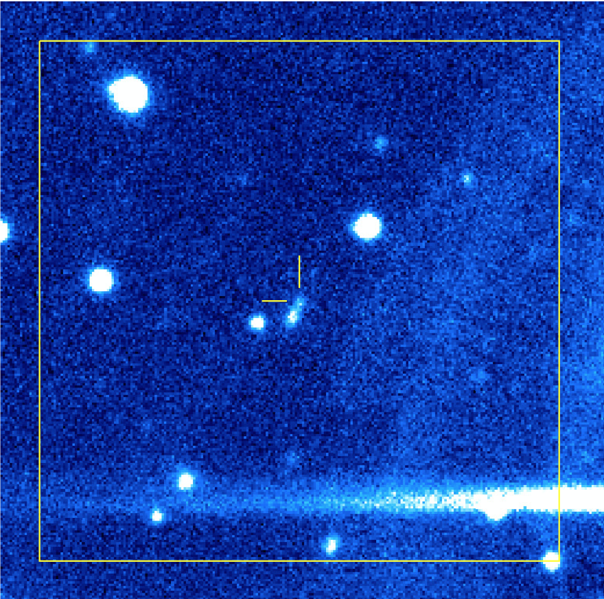

FRB 20190520B
Image from Niu et al., 2021 (ArXiv: 2110.07418)
Summary
- Detected by: FAST
- FRB coordinates (RA, Dec): 16:02:04.27 -11:17:17.3 (J2000)
- Host coordinates (RA, Dec): 16:02:04.3 −11:17:18.5 (J2000)
- Redshift: 0.2410
- Observed DM: 1210.3 pc cm-3
- Repeating: Yes
- References: Niu et al., 2021 (ArXiv: 2110.07418)
Host galaxy properties
| Quantity | Measured value | Unit |
|---|---|---|
| Stellar mass | 6 × 108 | M⊙ |
| Star-formation rate | 0.41 | M⊙/yr |